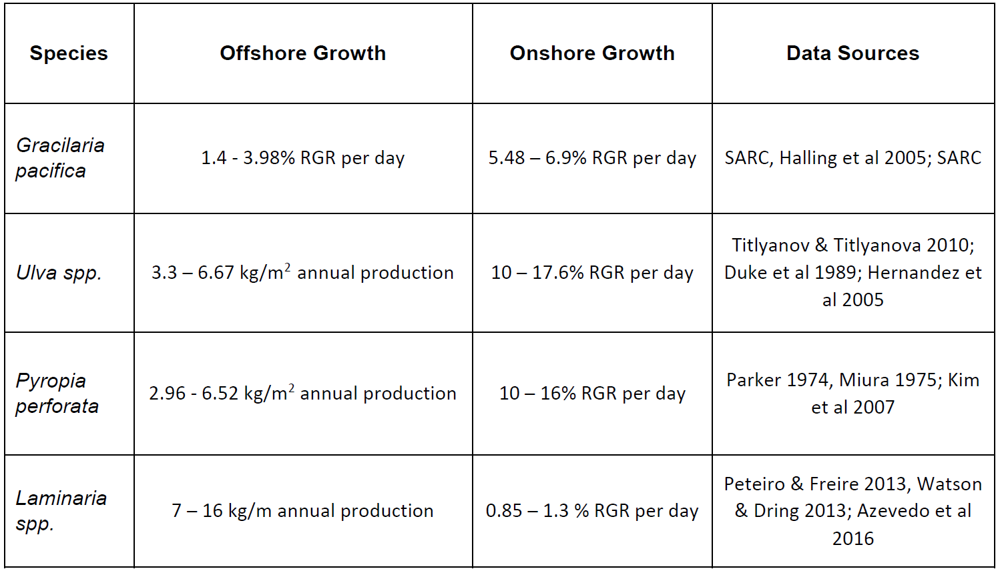
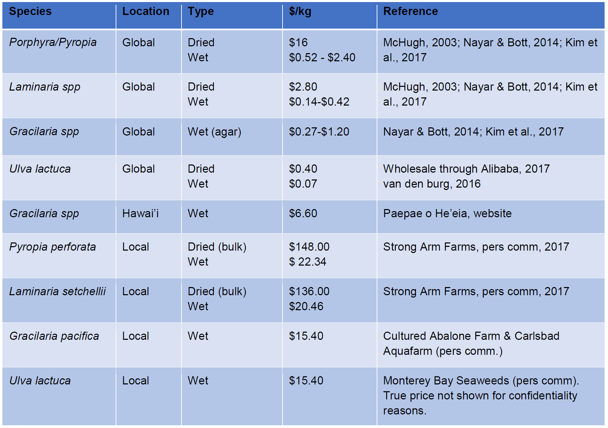

Seaweed aquaculture is an emerging industry in the United States, but has been established in many Asian countries for centuries. Over one-fifth of global annual aquaculture production comes from seaweed, with the vast majority of that being used for direct human consumption (Moffit, 2014). Seaweed is produced for a wide variety of uses, including pharmaceuticals, biofuel, and agricultural products, but food and health are human necessities that may motivate the more rapid expansion of local, sustainable aquaculture. The rich nutritional profile and low environmental footprint of seaweed contribute to its promise as a sustainable and healthy food source. To date, increasing demand for edible seaweeds in California has been primarily filled by imported products (NOAA Fisheries, 2017). However, the environmental and oceanographic conditions of California’s waters are an untapped resource for seaweed cultivation as evidenced by the dense stands of kelp forest along the coast. The lack of need for freshwater and pesticide inputs makes seaweed aquaculture a prime candidate to sustainably address food security issues in California.
In our project, we focused on seaweed species that satisfy a growing health-conscious community and have a high potential in the southern California food market. We assessed the economic feasibility of starting a seaweed farm in onshore (i.e. land-based) and offshore. Here, offshore is defined as mariculture occurring in ocean but does not necessarily refer to cultivation in deep and distant waters. The main barriers impeding the growth of the industry are high initial capital costs, permitting uncertainty, and a lack of established cultivation methods specific to the region. Our report aims to provide researchers, future farmers, and policy makers comprehensive scientific knowledge about ideal candidate species for edible seaweed cultivation, prospective economic feasibility, and mechanisms to circumvent some of those barriers in the short term.
We utilized three criteria to identify edible seaweed species that are ideal for cultivation and sale in southern California: 1) The algae must occur naturally throughout the whole region, 2) have a pre-existing food market in California, and 3) must have established aquaculture techniques. The first condition helps promote a cohesive and collaborative local industry and the latter two are desirable by aquaculturists who want to buy into a system that has a proven history of success. Applying these criteria to the native species of the Bight, the following four species emerge as the most promising candidates:
Optimal harvest season and potential productivity for a locale can be estimated by using knowledge of species growth rate (Table 1), physiological tolerance ranges and a combination of ambient environmental conditions, such as water temperature, nutrient availability, and photoperiod.
Table 1: Low and high growth rates for candidate species both offshore and onshore. In some instances, the most reliable growth estimate found in the literature was a final annual production instead of daily relative growth rate. These are indicated as such below and the equivalent relative growth rate was calculated for use in our bioeconomic model. 
The final decision facing a farmer is which grow-out structure to use for a particular species. All four aforementioned species can be grown in tanks onshore. For offshore cultivation, longline culture is most appropriate for G. pacifica and L. setchellii, whereas P. perforata and U. lactuca should be raised used nets. Since the latter two species are more susceptible to rough wave action, siting them in calmer or shallower waters will decrease the likelihood of fragmentation.
We synthesized projected farm yield, initial required capital, and annual operating costs through a bioeconomic model to investigate the key factors that will affect the economic feasibility of seaweed aquaculture in southern California (Figure 1). Seaweed growth rate has a major influence on the viability of a farm system and L. setchellii outperformed the other three candidate species largely due to its high biological productivity and low annual harvest costs. However, as a brown seaweed, it typically has a lower market value than a red species such as P. perforata. This suggests potential trade-offs in species selection between productivity and marketability. Our research also highlights the pros and cons of siting seaweed production on and offshore. Offshore production can be more economically viable due to its lower operational costs, but a farmer may be forced to make sacrifices in terms of product quality and increased risk.
Figure 1. Allocation of the costs associated with each species-location combination over a 5-year period. The annual and marginal costs have been calculated over 5-years and discounted (0.05). The other category is for cost categories that comprised less than 5% of the total cost for each species. Figure (a) shows the cost including Laminaria setchellii onshore, and (b) excludes L. setchelli onshore for better visual analysis of cost composition.
Additionally, securing a permit for offshore aquaculture has proven to be more difficult than for onshore systems. An aquaculture farmer can have more control over product quality onshore but this comes at the price of higher labor and energy costs. Our models predicts an average price of $11.42/kg across the four species for an onshore farmer to recoup their costs over a five-year time period compared to $6.84/kg offshore (Figure 2).
Figure 2: Break-even market price ($/kg) at the end of 5-years for all candidate species both onshore and offshore. For direct comparison of fresh and typically processed seaweeds, kg units are all fresh weight. The colored bars represent the mean growth rate scenario and the bounding bars show the low and high growth rate scenario.
Regardless of location, these “break-even” prices suggest that the cost of seaweed aquaculture in southern California prohibits successful competition on the global market, where seaweed is processed for use as a food additive (Table 2). Instead, the seaweed industry must position itself to provide a value-added produce or specialty item to be viable.
Table 2: Market price ($/kg) for seaweed species in the global, California, and US market. The costs associated with the different processing procedures (i.e. dried, raw) across species and markets are presented. Wet local values for Pyropia perforata and Laminaria setchellii were back-calculated from the dried price, assuming a 1:6.67 kg conversion from dried to wet biomass (Azevedo et al., 2016; Hernandez et al., 2005; Roesijadi et al., 2008; Watson & Dring, 2007). 
In California and elsewhere around the globe, seaweed aquaculture has been increasingly associated with shellfish cultivation. These two extractive organisms have been traditionally paired with fed finfish aquaculture, a process known as integrated multitrophic aquaculture (IMTA). However, shellfish and seaweed can also be grown together in isolation. Shellfish farmers benefit from diversifying their product portfolio and potential seaweed farmers can leverage existing permits for shellfish aquaculture to avoid having to obtain a new one. Sharing required infrastructure and novel “3-D” cultivation methods allows for increased yield from a single farm unit. This project demonstrates that an existing mussel farm could increase its profit by substituting seaweed production on to the farm. It is also possible that there are ecological benefits of growing the two species in unison, such as localized buffering of ocean acidification by seaweeds, but further empirical research is needed to corroborate these theories.
Seaweed aquaculture can be economically feasible in southern California but barriers exist that prevent the development of a regional industry. We recommend stakeholders should focus their efforts on adapting current cultivation techniques for use in California waters, identifying the most effective marketing strategies, and creating a political framework in support of sustainable best management practices. Future steps will include validating the growth rate estimates utilized in this report and quantifying the health and environmental benefits of seaweed aquaculture for consumers and decision makers. Further research should investigate co-culture with shellfish and the polyculture of multiple seaweed species to maximize economic and biological outcomes. Through increased collaboration between researchers, policy makers, and aquaculture farmers, sustainable seaweed aquaculture can be the next innovation in California’s rich history of food production.
Full Report and Supplementary Materials: